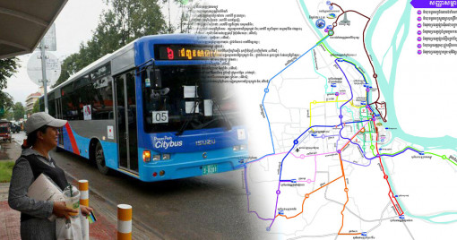

ជីវិតនិងសង្គម
អាប់ដេតតម្រាយខ្សែរត់ថ្មីរបស់រថយន្តក្រុងសាធារណៈ គឺមានរត់
ជារង្វង់ និងវិលជុំ ពិសេសមានទៅដល់ កួរស្រូវ និងពីផ្លូវកប់ស្រូវទៅ
ផ្សារអ៊ីអន២
រដ្ឋាករស្វយ័តដឹកជញ្ជូនសាធារណៈ បានជូនដំណឹងពីការបើកប្រតិបត្តិការសេវាដឹក
ជញ្ជូនសាធារណៈរថយន្តក្រុងតាមតម្រាយខ្សែរត់ សរុបចំនួន ១៨។
ថ្ងៃនេះ ម៉ោង 15:16